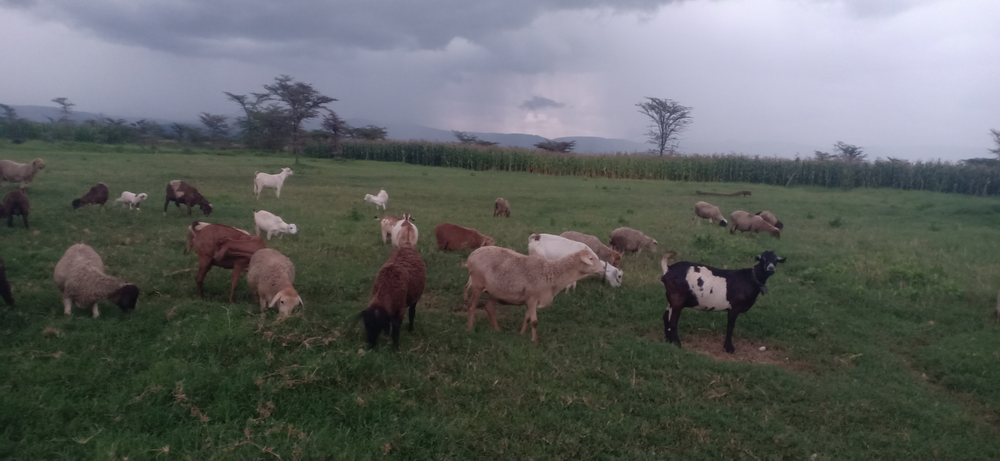
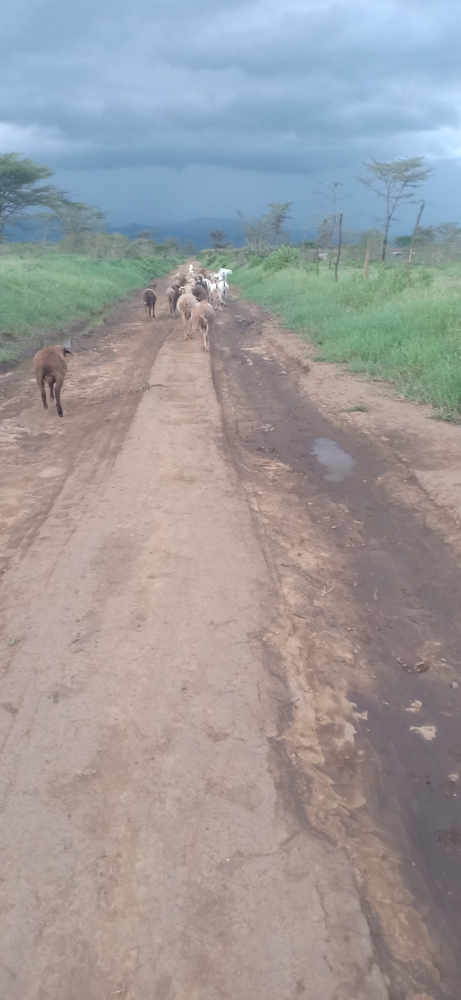
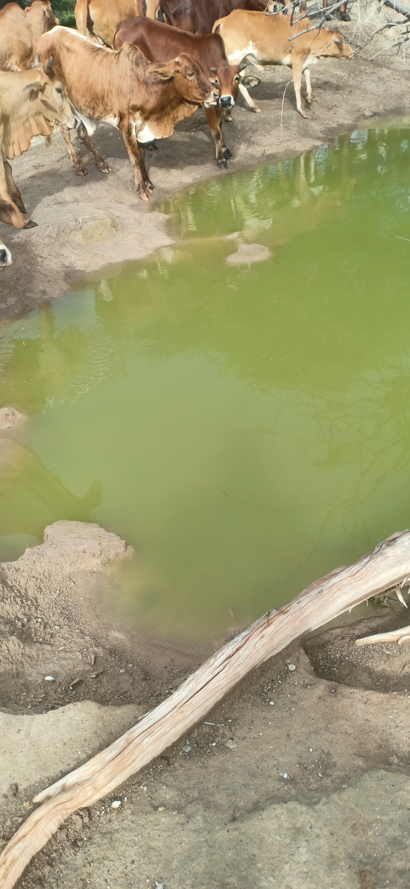

{kind=link}

{kind=link}

{kind=link}



in the savannah, rain is more than just water.
It is a symbol of happiness, peace, and hope.
After long dry days, the arrival of rain brings comfort to the land and its people.
The dry grass turns green, rivers begin to flow again, and animals find fresh food and water
. For those who live in the savannah,
rain means life returning to the earth and a promise of better days ahead. 🌧️🌿
Religion in the Savannah ⛪🌿
Religion plays an important role in the lives of many people living in the savannah.
It guides their beliefs, traditions, and daily activities.
In many savannah communities, religion is closely connected to nature, culture, and community life.
Many people in the savannah follow major world religions such as christianity and Islam.
Churches and mosques are common in many villages and towns, and people gather regularly for prayer, worship, and religious celebrations.
These religions teach values such as kindness, respect, honesty, and helping others in the community.
Alongside these religions, some communities still practice African Religions.
These beliefs often involve respect for ancestors, spirits, and the natural world. People may perform rituals, prayers, or ceremonies to ask for rain, good harvests, protection, and health.
Religion also brings people together during important events such as weddings, funerals, and festivals.
It helps strengthen social bonds and gives people hope, especially during difficult times like drought or crop failure.
In the savannah, religion is not just about worship; it is also part of culture, identity, and everyday life.
It helps people understand the world around them and maintain harmony with nature and their communities. 🙏🌾